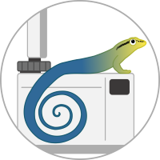

Introduction
{kind=link}
pyGecko is an open-access python library for the parsing, processing and analysis of GC/MS and GC/FID raw data. pyGecko offers a variety of analysis tools for the automated or semi-automated GC handling of measurements and sequences. This includes the interpretation of measurements in the context of the experiment by reading in substrates and target compounds, as well as the automatic identification of internal standards based on their retention time or mass spectrum. Compound identifications can be performed based on retention times, the mass of a molecular ion or fragment and spectral comparison. Quantification relative to an internal standard can be performed for GC-FID measurements. Results of an analysis as well as chromatograms and spectra can be compared, visualized and reported in standardized formats like the Open Reaction Database (ORD) schema. pyGecko is designed to be easily integrated into automated workflows and can be used as a stand-alone tool or as a python library.
Installation
pyGecko can be installed via pip:
pip install pygecko
To read vendor files you need to install the msConvert tool from ProteoWizard. You can download it from here. You will be asked to specify the path to the msConvert.exe during the first run of pyGecko.
Usage
For non-automated workflows pyGecko is best used with jupyter notebooks. The notebooks folder of the repository contains examples for the usage of pyGecko for the quantitative analysis of reaction outcomes and spectral matching. The Python scripts used to perform the data processing for the publication can be found in the examples folder. GC-MS and GC-FID raw data for all experiments is available on Zenodo.